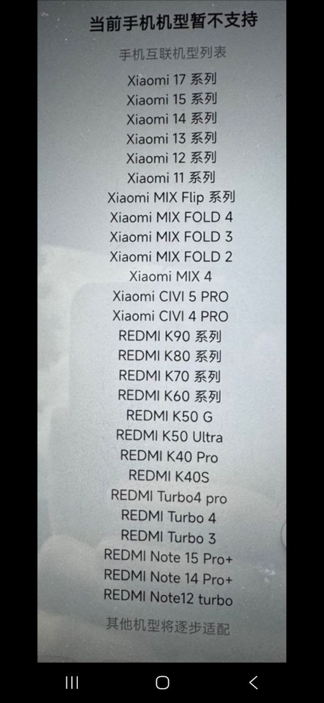

Interconnectivity (互联, «Взаимосвязь») - штатная связка телефона Xiaomi с планшетом YU7 и SU7: приложения телефона открываются на экране машины отдельными окнами, оттуда же работают MI Dashboard и Xiaomi Cockpit. Ниже - какой телефон для этого подходит: официальный список с экрана машины, модели, которые реально проверили владельцы в клубе, и условия, без которых ничего не заработает.
Телефон Xiaomi, Redmi или POCO на китайской прошивке HyperOS CN: в номере сборки есть CN, например HyperOS 2.0.x.x.CNXM. Один Mi-аккаунт на телефоне и в машине. Приложение Xiaomi Auto для Interconnectivity ставить не нужно - достаточно войти в аккаунт в настройках телефона.
Global, EU, xiaomi.eu - модуля Interconnectivity для автомобиля в этих прошивках нет, телефон в машине не появится. iPhone - только CarPlay и AirPlay. Samsung, Huawei, OPPO и прочие Android - только CarLink-зеркало, см. XiaoDroidLink и Samsung Auto.
В машине: 设置 (Settings) → 连接 (Connections) → 小米互联 (Xiaomi Interconnectivity), на телефоне включить Wi-Fi и Bluetooth, подтвердить запрос. Глобальную версию можно разлочить и перешить на CN - тогда работает как китайская.
Этот список машина показывает сама, когда подключаешь неподдерживаемый телефон: заголовок 手机互联机型列表 («Список моделей для взаимосвязи телефона»), внизу - «остальные модели будут добавляться постепенно». Снято с экрана YU7 в сентябре 2026.

«Серия» - значит все модели линейки: базовая, Pro, Pro Max, Ultra. Из Redmi Note в списке только старшие Pro+ и Turbo - обычный Redmi Note 13 Pro или Note 15 в нём нет. Зелёной рамкой - модели 2025-2026 года, которых ещё нет на странице xiaomicar.pro.
По сообщениям в чатах @XiaomiEVclub, @xiaomiautoclub и @XiaomiY7MAX, апрель - октябрь 2026. Все телефоны - на китайской прошивке.
| Телефон | Статус | Что пишут |
|---|---|---|
| Xiaomi 17 / 17 Pro / 17 Pro Max | работает | Основной выбор на осень 2026: 17 Pro и Pro Max ещё и с UWB-ключом. Xiaomi 17 (без Pro) выпускается и в глобальной версии - брать строго CN. У одного владельца 17 Pro Max связь слетала после обновления HyperOS 3.0.306 - помогла повторная привязка. |
| Xiaomi 17 Ultra | работает с нюансом | Без мастер-аккаунта машина пишет «couldn't sign in» - сначала МА, потом Interconnectivity. |
| Xiaomi 15 / 15 Pro / 15 Ultra | работает | Interconnectivity и MI Dashboard работают. На 15 CN для MI Dashboard нужно снять «Controlled by Restricted Setting» в доступе к уведомлениям - разбор на странице приложений. |
| Xiaomi 14 / 14 Pro | работает | Самый стабильный вариант под полный экран на HyperOS 2.0. На HyperOS 3 полноэкранный режим отдельных приложений уже не работает - если нужен именно он, телефон не обновлять. |
| Xiaomi 13 Pro | по-разному | У одного владельца на HyperOS 3.0.3 с ПО машины 1.12.0 соединение рвётся сразу после подтверждения, хотя управление климатом и сиденьями с телефона работает. Единичный кейс. |
| Redmi Turbo 4 | работает | Самый популярный бюджетный выбор: «работает отлично и окошком, и на полный экран - карты, музыка, ютуб». Покупают специально под машину, чтобы лежал в подлокотнике. |
| Redmi K70 / K70 Pro | работает | Любимец китайских владельцев SU7 под полный экран на HyperOS 2.0: минимальная задержка, хорошая передача звука. |
| Redmi K60 | работает | Разлоченный с Авито за 10 тысяч, перешит на CN - «всё летает». Для телефона, который просто лежит в машине, большего не надо. |
| POCO F5 Pro / F6 | после перешивки | Глобальный POCO - это Redmi K-серия. Разлочить загрузчик, прошить CN HyperOS 2.0 - дальше работает как китайский Redmi. |
| Redmi Note 13 Pro, Note 15 | нет в списке | Спрашивали в клубе, подтверждений нет, в официальном списке этих моделей нет - только Note 15 Pro+ и Note 14 Pro+. |
Redmi Turbo 4 или Redmi K60 / K70 на CN. Дёшево, проверено десятками владельцев, задача - лежать в подлокотнике и отдавать карты, музыку и YouTube на экран.
Xiaomi 17 Pro / 17 Pro Max CN. Плюс UWB-ключ: подошёл - двери открылись, три секунды у кормы - открылся багажник. UWB есть только у 15S Pro, 17 Pro, 17 Pro Max, 17 Ultra и 18 Pro; у обычных 15 / 16 / 17 его нет.
Xiaomi 14 / 14 Pro или K70 Pro на HyperOS 2.0 и не обновлять до 3.0. На третьей версии приложения выводятся только окном.